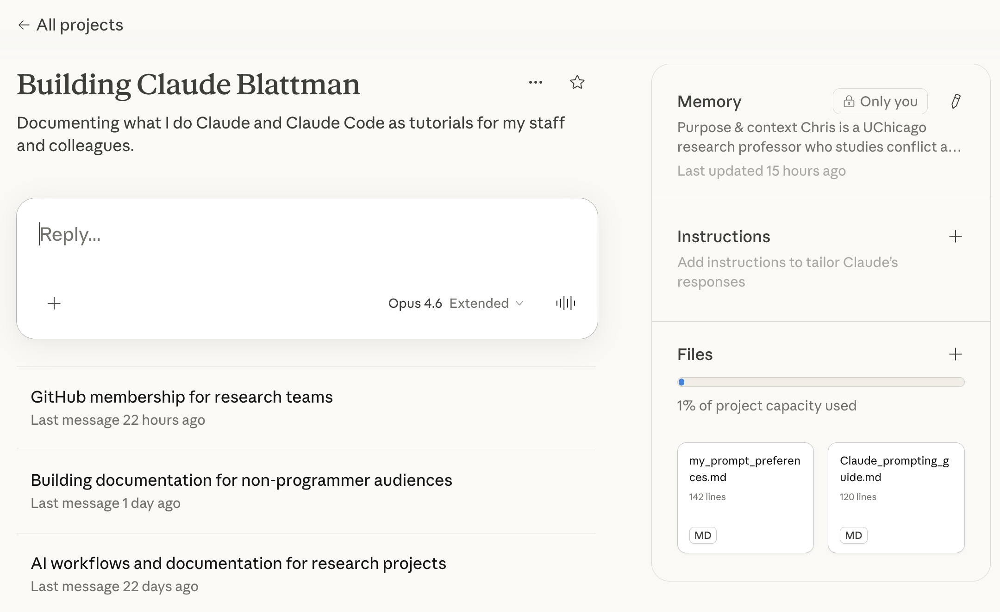
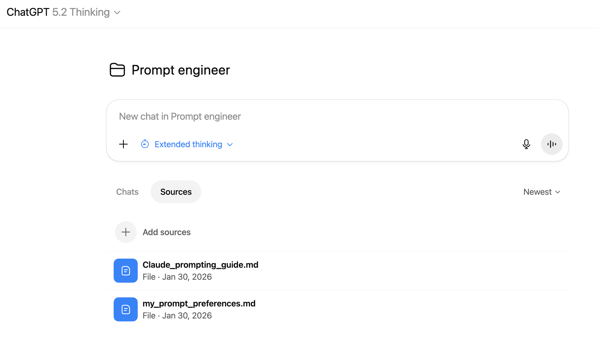

Prompt Engineering¶
No Claude Code required
Prompt engineering sounds technical. It isn't. It's the skill of asking AI tools for what you actually want, in a way that gets useful results on the first try.
This page covers prompt engineering as a repeatable method you can apply to any task.
The single most important thing on this page
Don't memorize prompt engineering rules — make the AI do it for you. Create a Project in ChatGPT or Claude.ai, paste in the instructions below, and it will restructure your messy input into clean prompts automatically. Jump to the how-to.
The same idea works for plan review: paste a plan into a
fresh chat with an adversarial prompt
and get structured critique — no coding needed. In Claude Code, the
/prompt skill
formats and executes prompts in a single command.
Why This Matters¶
The gap between a mediocre AI interaction and a great one is almost always the prompt. Not the model, not the subscription tier, not some secret technique. Just how clearly you communicated what you wanted.
Good prompts share three properties:
- They provide context — enough background that the AI doesn't have to guess
- They specify the task — unambiguously, in 1-2 sentences
- They define the output — format, length, tone, audience
Most bad interactions fail on #1 (no context) or #3 (no output specification).
The Anatomy of a Good Prompt¶
Here's a real prompt with each section labeled. Not every prompt needs all six parts — but knowing them lets you diagnose why a prompt isn't working.
Role
You are a senior economics journal referee reviewing a paper for the American Economic Review.
Context
I'm writing a grant proposal for a foundation that funds violence reduction programs. The proposal is for a randomized evaluation of a CBT intervention for high-risk youth in a Latin American city. Budget ceiling is $500K over 3 years.
Task
Draft the methodology section (800-1000 words). Focus on the randomization strategy, primary outcomes, and power calculations.
Constraints
- Keep it under 1000 words
- Academic but accessible — like a top-5 journal, not a textbook
- Don't include a literature review — that's a separate section
- Focus on identification strategy. Spend less time on implementation details.
Output Format
Structure as: (1) Design overview, (2) Randomization, (3) Outcomes and measurement, (4) Power and sample size. Use short paragraphs. No bullet points — this is narrative prose.
Bookend
Remember: the goal is a methodology section for a foundation grant, not a journal paper. Keep the tone accessible and emphasize the practical implementation plan.
You are a senior economics journal referee reviewing a paper
for the American Economic Review.
I'm writing a grant proposal for a foundation that funds violence
reduction programs. The proposal is for a randomized evaluation
of a CBT intervention for high-risk youth in a Latin American
city. Budget ceiling is $500K over 3 years.
Draft the methodology section (800-1000 words). Focus on the
randomization strategy, primary outcomes, and power calculations.
Constraints:
- Keep it under 1000 words
- Academic but accessible — like a top-5 journal, not a textbook
- Don't include a literature review — that's a separate section
- Focus on identification strategy over implementation details
Structure as: (1) Design overview, (2) Randomization,
(3) Outcomes and measurement, (4) Power and sample size.
Use short paragraphs. No bullet points — narrative prose.
Remember: the goal is a methodology section for a foundation
grant, not a journal paper. Keep the tone accessible and
emphasize the practical implementation plan.
The six sections explained¶
1. Role (optional) — Tell the AI what perspective to take. Useful when you need domain expertise. Skip for simple tasks — "You are a helpful assistant" adds nothing.
2. Context — What does the AI need to know? Who you are, what you're working on, relevant constraints, what you've already decided.
3. Task — The core ask in 1-2 clear sentences. Front-load this — don't bury it after three paragraphs of context.
4. Constraints — What should the AI do or avoid? Be specific: "Keep it under 1000 words" not "be concise." Include exclusions and priorities.
5. Output Format — How should the result be structured? Sections, length, tone, style.
6. Bookend (for long prompts) — Restate the key instruction at the end. AI models sometimes lose focus on long inputs.
Match Effort to Stakes¶
Not every task needs the same level of effort. A quick email reply doesn't need the AI to "research best practices" and "state assumptions." A methodology review does.
Three levels:
| Level | When to Use | What to Add |
|---|---|---|
| Light | Quick tasks, routine emails, simple lookups | Nothing extra — just format clearly |
| Standard | Analysis, research writing, design decisions | Ask for assumptions and rationale: "Include key assumptions (2-3 bullets) and brief rationale for major choices." |
| Deep | High-stakes writing, methodology, pre-analysis plans | Ask for verification: "Research current best practices. Compare your approach against established standards. Flag where you deviate and why." |
Default to Light. Upgrade when the stakes justify it.
Use Examples (But Try Without Them First)¶
Examples are one of the most powerful prompting techniques — but they're also overused. The rule of thumb: try without examples first. If the output format or style is wrong, tighten your instructions or add an output schema. Only add examples if that still fails.
When examples help most:
- You need a specific format Claude doesn't know (a custom report template, your organization's style)
- You want consistent voice across multiple outputs
- Describing the format in words would take longer than showing it
When you probably don't need them:
- Standard formats (emails, summaries, bullet lists) — Claude already knows these
- Tasks where you want Claude to suggest the best approach rather than match a template
When you do use examples, keep them compact. input → output pairs work better than verbose multi-paragraph samples. Two good examples beat five mediocre ones.
Use Tags to Separate Instructions from Content¶
When you paste a long document into a chat, the AI can confuse your instructions with the document text. Simple tags fix this:
When a prompt has multiple types of content — instructions, background data, documents to analyze — XML-style tags help Claude parse what's what.
<instructions>
Summarize the key findings from this paper. Focus on methodology
and results. Keep it under 300 words.
</instructions>
<paper>
[Full paper text pasted here...]
</paper>
<output_format>
Three sections: (1) Method, (2) Key findings, (3) Limitations.
</output_format>
Without tags, Claude has to figure out where your instructions end and the document begins. With tags, there's no ambiguity. You don't need tags for short, simple prompts — they're most useful when you're mixing instructions with pasted content.
Order Matters: Long Content First, Question Last¶
When you paste a long document (a paper, a transcript, a full chapter) into the same prompt as your question, the order matters. Put the long content at the top. Put the question at the bottom.
<document>
[Full paper pasted here — possibly thousands of words]
</document>
Now: summarize the three most important methodological weaknesses
and rank them by severity.
Anthropic's own evaluations show up to a 30% quality uplift from this ordering vs. putting the question first, especially with complex or multi-document inputs. The question at the bottom is the last thing the model reads — it anchors attention where you want it.
This pairs with the bookend pattern: if your instructions span more than a few paragraphs, restate the core ask at the very end.
Break Complex Tasks into Steps¶
A prompt that asks for a literature review, methodology section, budget narrative, and timeline will produce mediocre versions of all four. Break complex tasks into a sequence of focused prompts where each step builds on the previous one.
Single prompt (works for simple tasks):
Analyze this dataset, identify trends, and write an executive summary.
Chained approach (better for complex work):
Prompt 1: Analyze this dataset and identify the 5 most significant trends. For each, explain the evidence.
[Review output, then...]
Prompt 2: Based on those trends, write a 2-paragraph executive summary for a non-technical audience.
Chaining works because you can course-correct between steps. If Prompt 1 misses something, you fix it before Prompt 2 builds on bad foundations. This matters most for research, analysis, and creative work — anything where direction might shift based on intermediate results.
Separate Persistent Rules from Task-Specific Requests¶
When you're building a prompt you'll reuse (a project instruction file, a template, or a skill), split the content into two layers:
- Persistent layer — role, tone, citation rules, house style, refusal policy. Things that don't change from task to task.
- Task-specific layer — the actual request, the pasted inputs, today's specifics.
In a ChatGPT or Claude.ai Project, the persistent layer goes in Project Instructions; the task layer goes in your chat messages. In Claude Code, the persistent layer goes in CLAUDE.md or a skill file; the task layer is what you type at the prompt.
## Persistent (lives in Project Instructions)
You are a research assistant. Cite sources for all empirical
claims. Never fabricate data. Tone: professional, concise.
If uncertain, say so.
## Task-specific (lives in the chat message)
Summarize the attached paper, highlighting methodology and
key findings.
Keeping these layers separate prevents "prompt mush" — where behavioral rules get tangled with per-task instructions and collide with each other. It also makes the task layer shorter and easier to iterate on without disturbing the behavioral rules.
Common Anti-Patterns¶
Vague thoroughness language. "Be comprehensive" and "be meticulous" are empty calories. Replace with specific verbs:
- "Compare against [specific standard]"
- "Research current best practices for [domain]"
- "Flag where your approach deviates from [benchmark]"
Over-prompting. Modern AI models are good at following instructions. You don't need CRITICAL: YOU MUST ABSOLUTELY... — a calm, specific directive works better. Shouting in all-caps doesn't make the AI try harder. In fact, Anthropic's prompt engineering guide specifically warns that anti-laziness prompts like "be thorough" and "think carefully" can cause newer models to overthink and waste time.
No pushback permission. If you want honest feedback, say so: "Tell me directly if this approach has problems. Don't just agree with everything." By default, AI tends toward politeness and agreement.
Negative rules when a positive example would work. "Don't use markdown" is weaker than "Write in flowing prose with no headers or bullets." "Don't be formal" is weaker than "Use contractions. Write how a person talks, not how a corporation writes." When you must forbid something, pair the ban with a concrete positive alternative — otherwise the AI has to guess what you do want.
Reusable Constraint Blocks¶
After you've written a few prompts, you'll notice the same constraints reappearing — "cite sources," "flag uncertainty," "no preamble." Instead of retyping them, save them as named blocks you paste in when needed. This is the same idea as reusable code snippets, applied to prompts.
Five blocks that cover most cases:
Anti-hallucination
If you are uncertain about a fact, say so explicitly. Do not infer from context. Do not fabricate citations or statistics.
Anti-bloat
Output only what was asked. No preamble, no summary of what you are about to do, no closing remarks unless specifically requested.
Scope guard
If the task requires information not provided, state what is missing rather than proceeding with assumptions. Ask one clarifying question maximum.
Structured uncertainty
For non-trivial outputs, append: (a) key assumptions (2–3 bullets), (b) what you verified, (c) what remains uncertain.
Voice preservation
Do not rephrase for formality. Match the register, sentence length, and tone of the input. Use contractions where the input uses them.
Keep your own list in your Prompt Preferences file. When a prompt fails in a specific way, add a new block to prevent it next time. This turns prompt-writing into an accumulating library rather than repeated work.
Make the AI Do This for You¶
You don't have to internalize all of the above. Create a project in ChatGPT or Claude.ai with prompt engineering instructions as the project file, and the AI will restructure your messy input into clean prompts automatically.
Setup¶
- ChatGPT (Plus or Team): Sidebar → Projects → New Project → paste the file below into Instructions.
- Claude.ai (Pro): Projects → Create Project → paste into Project Instructions.
In Claude.ai, go to Projects → Create Project. Add your instructions and upload files in the right panel:

In ChatGPT, go to Sidebar → Projects → New Project. Add files under the Sources tab:

The instructions file¶
The instructions tell the AI to take any unstructured input and restructure it into a clean, well-organized prompt. It supports three modes: "quick format" (just the prompt), "format and critique" (prompt + alternatives), and "prompt pack" (2-4 variants at different depth levels).
Download the instructions Copy and paste into your project's instructions field.
Now when you dump a rough idea into this project — dictated, messy, whatever — the AI restructures it into a clean prompt you can paste anywhere.
Going Further¶
Once you find prompts that work well for recurring tasks, save them. Replace specifics with [FILL IN] placeholders and you have reusable templates.
For a head start, download the Prompt Preferences Template — it captures your standard sections, common constraints, preferred output formats, and roles in one file you can paste into any ChatGPT or Claude.ai project.
When you're ready for more: Project Folders show how to build domain-specific instruction sets, and in Claude Code you can turn templates into skills (slash commands) that run with a single command — the Setup Guide shows how.
Three levels of saved context¶
Save context at three levels: Prompt Preferences for any chatbot, Project Folders for recurring tasks, or CLAUDE.md for Claude Code. Start with #1 and add layers as you need them.
Downloadable References¶
These are the actual files I use. Download, adapt, and paste them into your own projects.
- My Prompt Preferences — A template showing how to document your personal prompting style: standard sections, common constraints, preferred output formats, and roles. Adapt it to your own work.
- Prompting Best Practices Guide — A comprehensive reference covering core principles, depth calibration, XML tags, anti-patterns, task-specific guidance, prompt chaining, versioning, and a quality checklist.
Recommended Resources¶
- Anthropic's Prompt Engineering Guide — The official reference. Thorough and practical.
Next Steps¶
-
Document your preferences
Capture your prompting style in a reusable file. Paste it into any AI project.
-
Stress-test your plans
Paste a plan into a fresh chat with an adversarial prompt and get structured critique — no coding needed.
-
See prompts in action
The
/promptskill automates prompt formatting inside Claude Code.
Found this useful? Star it on GitHub or share with a colleague. Something broken or unclear? Send feedback.